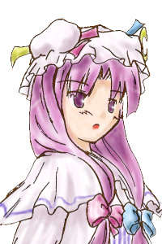

| 東方紅魔郷 | 東方妖々夢 | 東方永夜抄 | 東方花映塚 | その他 |
|---|
| パチュリー ノーレッジ |
|---|
|

このゲームの主人公。 紅魔館の書斎に憑いている魔女。 普段は外に出ないのだが、結構な本が無くなったので探しに行くことに。 喘息と貧血は魔法でギリギリ防衛中。 |
| レミリア スカーレット |
|
紅魔館の主。 パチュリーの友達の吸血鬼。５００年くらい生きている。 日光とか雨とか嫌い。十字架は平気。 満月の夜はすごいらしい。 |
| 小悪魔 |
|
パチュリーの雑用係兼保護者。 一応、いたずら好き。パチュリーも好き。 |
| アリス マーガトロイド |
|
陰気な森に住んでいる魔法使い。 魔理沙ときのこは嫌い。 最近、皆になめられている。 |
| 霧雨 魔理沙 |
|
性格の悪い、普通の魔法使い。 大鑑巨砲主義。 紅魔館の書斎に良く行って、本を借りていく（永久に） |
| 伊吹 萃香 |
|
宴会好きの酔っ払い鬼っこ。 ものすごいパワーをもつ。 |
| 博麗 霊夢 |
|
博麗神社に住む、無敵の巫女。 妖怪退治を生業としている。 お賽銭が好き。 |
| 小野塚 小町 |
|
三途の川あたりに出没する、死神。 怠けもので、よく閻魔様に怒られる。 |
| 魂魄 妖夢 |
|
白玉楼に住む、半人半霊の庭師。 剣を振り回す、危ない人。 冥界一硬い盾だと言い張っている。 |
| 因幡 てゐ |
|
永遠亭に住む、兎の妖怪。 すごい健康。嘘が得意の詐欺兎。 竹林で迷った時、彼女に会うと出られるとか。 |
| 鈴仙・優曇華院・イナバ |
|
永遠亭の月兎。 紅い目を持ち、見た相手を狂気に誘う。 でも、割とまともな性格なので、いじめられっこ。 |
| 紅 美鈴 |
|
紅魔館の門番。 皆にザコ扱いされ、虐げられる日々。 でも仕事は一応している。 |
| 十六夜 咲夜 |
|
紅魔館のメイド長。 仕事も完璧にこなす、お嬢様のお目付け役。 幻想郷にはバカと変人が多いので、気苦労が絶えない。 |
| 八雲 紫 |
|
スキマを操る、幻想郷のえらい人。 いつもぐーたらしていて、式の藍に雑用を押し付ける。 |
| フランドール スカーレット |
|
レミリア・スカーレットの妹。 長いこと幽閉されていたので、少し壊れている、らしい。 でも、周りは変人ばかりなので、少々壊れてても誰も気にしない。 |
| 藤原 妹紅 |
|
竹林にひっそりと隠遁している、普通の不老不死。 永遠亭の姫、輝夜が嫌い。 動けなくなるまでいたぶられたり、肝を食べられそうになったりと 最近は散々な目にあっている。 |
| 四季映姫・ヤマザナドゥ |
 小町の上司の閻魔様。
小町の上司の閻魔様。説教が好き。 紫にはザコ扱いされた。 |
プログラム本体、イメージデータ、マニュアル等の著作権は製作者ＫｖＬＷにあります。